Part abc_00000065 compressed in an Instron; force vs crosshead travel. Error = mean relative force error at the 5 checkpoints (0.5 to 2.5 mm). Colour on the part: plastic strain PEEQ, same range in every video.
Before post-training the simulation is 33 % off the real test; after post-training it is 2.0 % off.
Before: frictionless platens, default mesh (2,937 nodes), no seating. After: learned test conditions + the fine-tuning run's most accurate mesh (generation 1, 8,753 nodes, agent a2). Deformation at true scale.
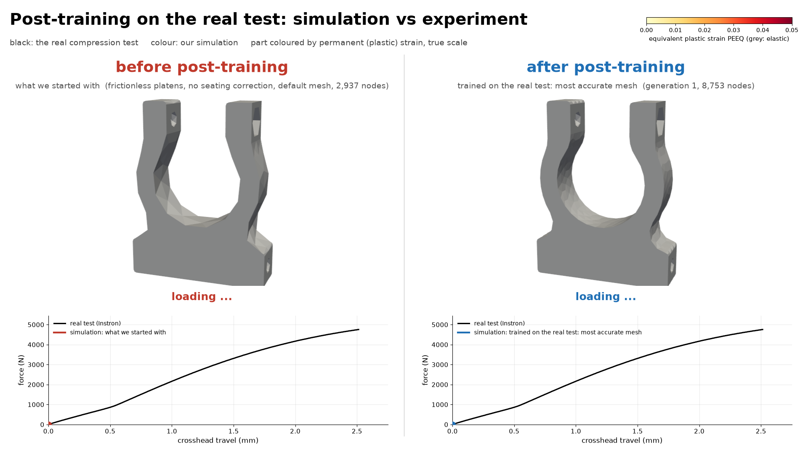
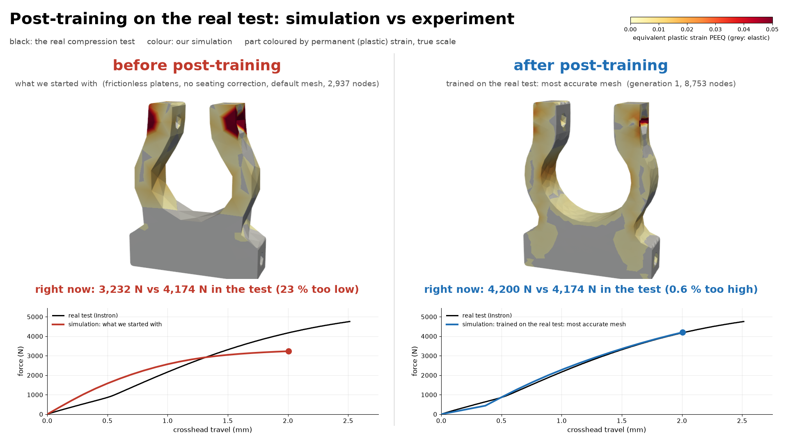
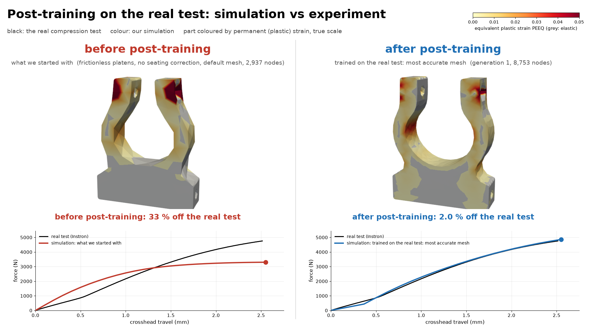
Error vs the real test: 33 % → 7.8 % → 4.6 % → 2.0 %.
Learned test conditions do most of the work; the meshes (2,937 / 6,430 / 8,753 nodes) take it the rest of the way. Deformation at true scale.
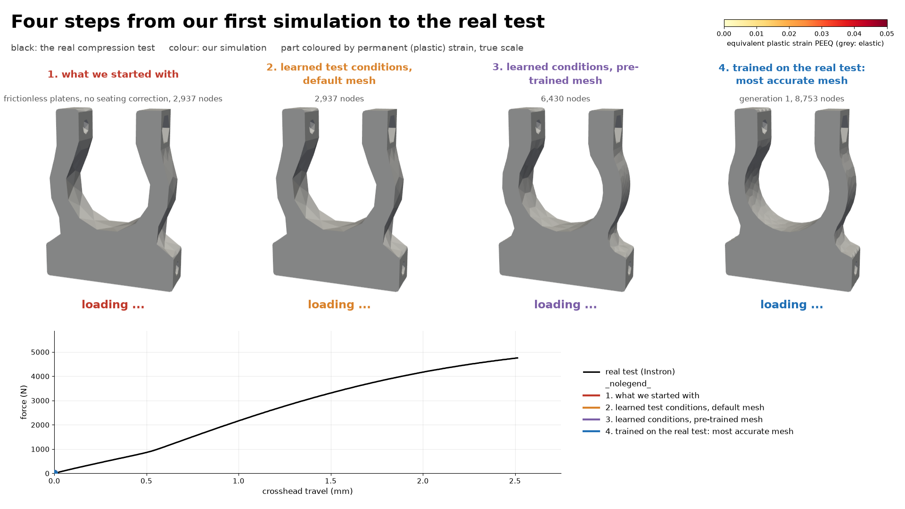
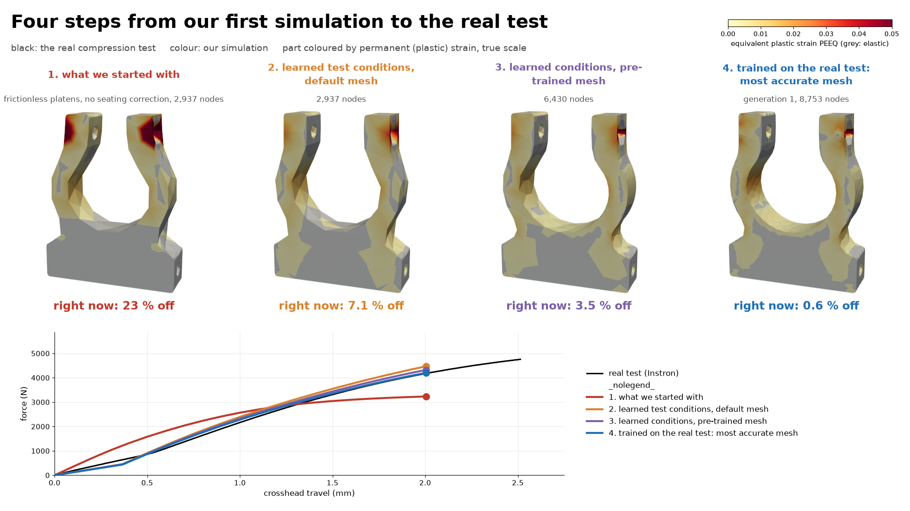
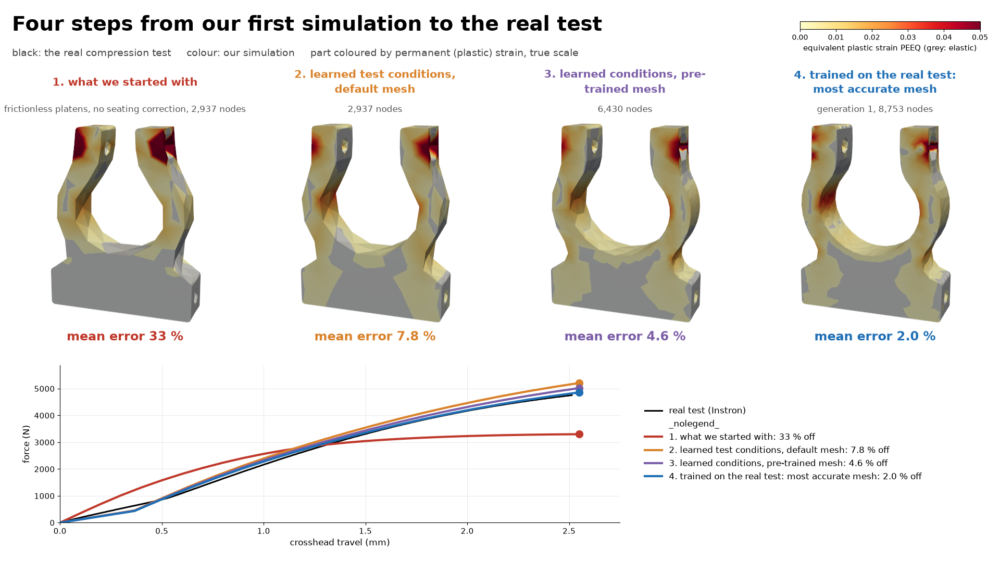
What we started with: 33 % off the real test.
Frictionless platens, default mesh (2,937 nodes), no seating or machine compliance; it levels off near 3,298 N while the test reaches 4,755 N. Deformation at true scale.
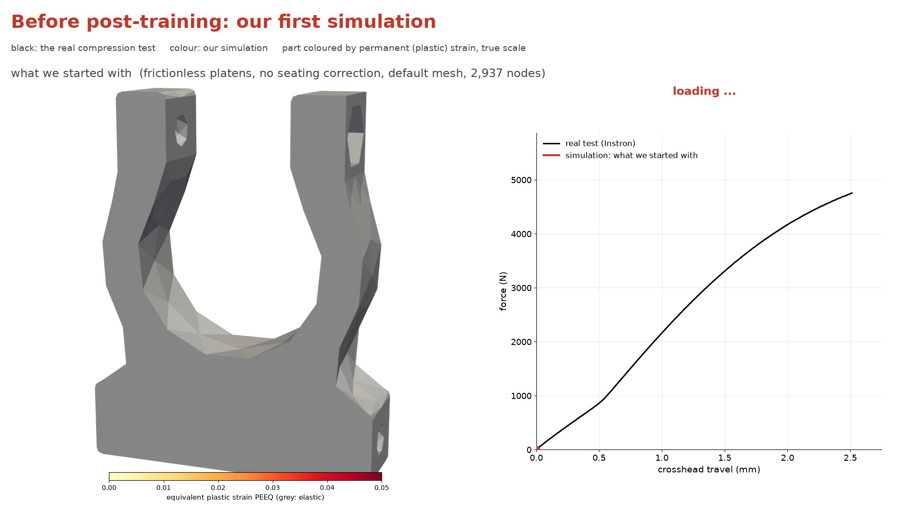
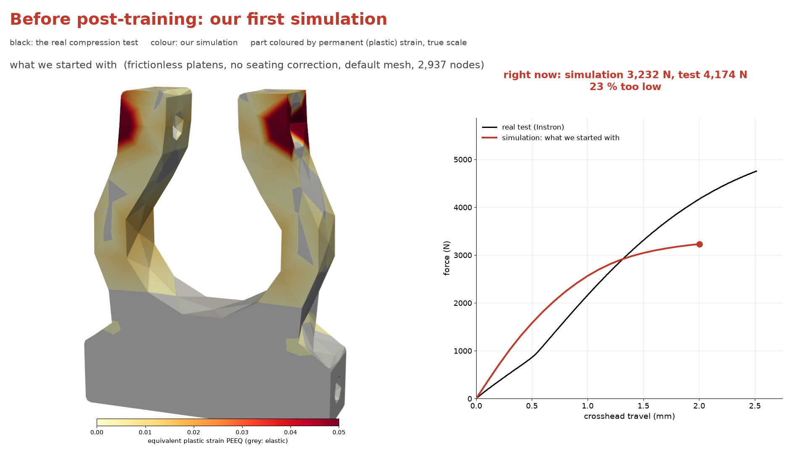
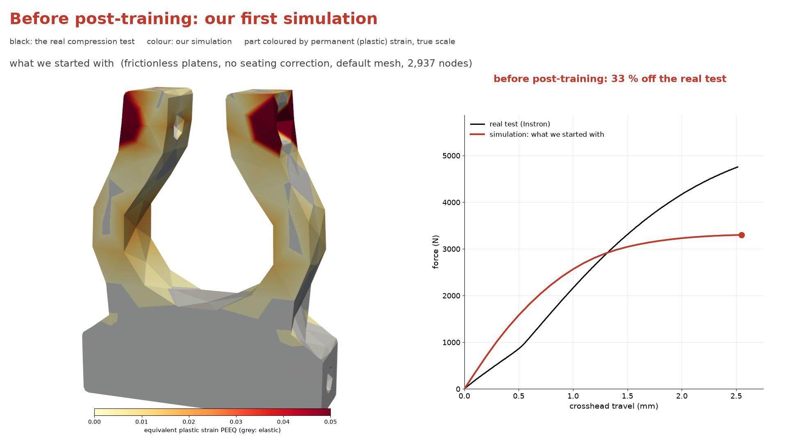
After post-training: 2.0 % off the real test.
Learned test conditions + the fine-tuning run's most accurate mesh (generation 1, 8,753 nodes, agent a2). Deformation at true scale.
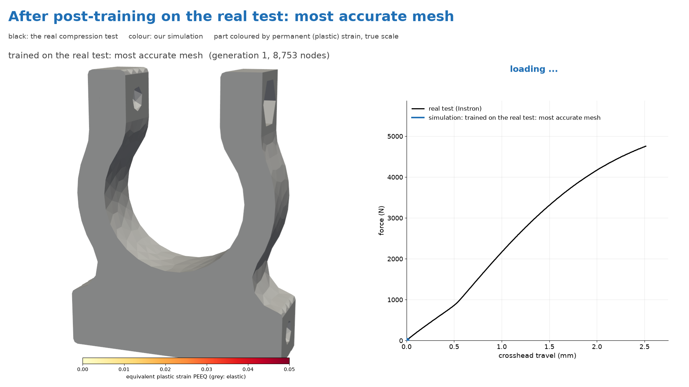
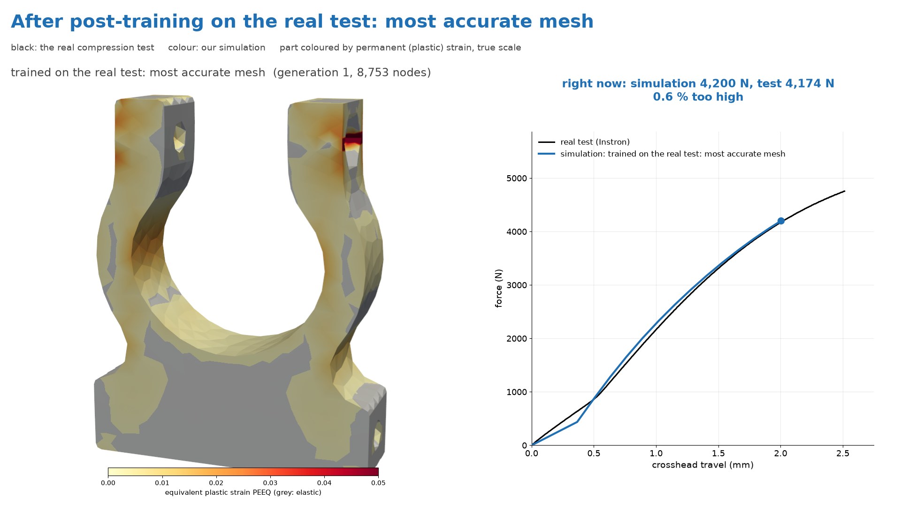
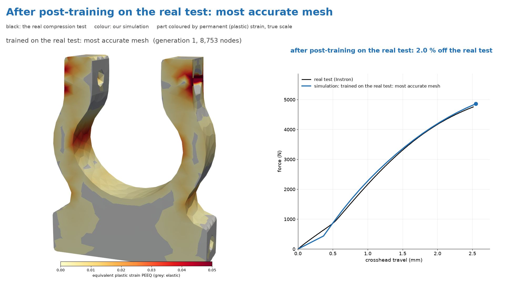